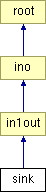

Main Page
Classes
Files
Class List
Class Index
Class Hierarchy
Class Members
sink Class Reference
#include <
sink.h
>
Inheritance diagram for sink:

List of all members.
Public Member Functions
sink
()
~sink
()
rec_typ
REC
(
data
*, int)
Constructor & Destructor Documentation
sink::sink
(
)
sink::~sink
(
)
Member Function Documentation
rec_typ
sink::REC
(
data
*
d
,
int
)
[virtual]
Reimplemented from
root
.
The documentation for this class was generated from the following files:
src/misc/
sink.h
src/misc/
sink.c
Generated on Wed Jan 6 16:46:33 2010 for Luayats by
1.6.1
 1.6.1
1.6.1